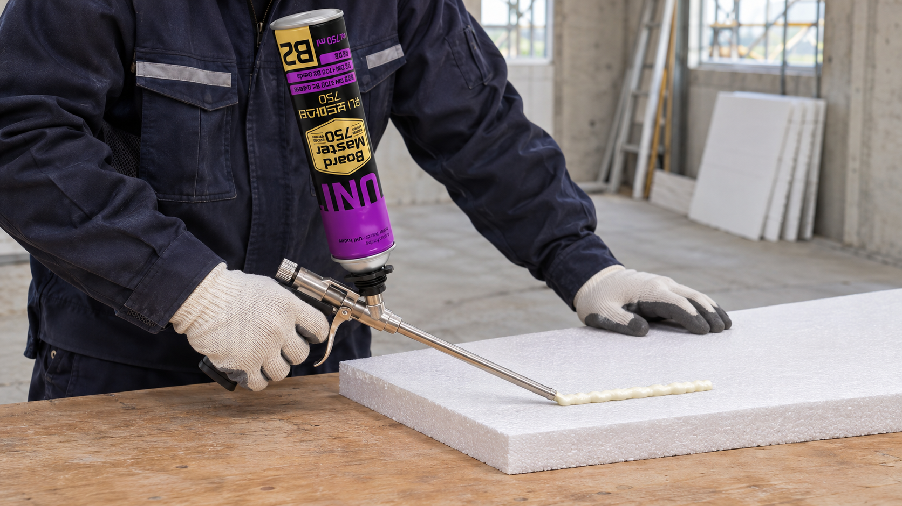

REVIEW DRAFT / V1
보드마스터 750 사용법 영상 초안
60초 · HD 1280×720 · 무음 자막형 모션그래픽
제조사 확인 전인 검토용 초안입니다. 실제 시공 촬영 영상이 아닙니다.
NEXT DIRECTION / REALISTIC KEYFRAME
실사형 영상의 기준 이미지
참고 영상의 시연 방식을 분석해 새로 만든 AI 정지 이미지입니다. 아직 움직이는 영상은 아닙니다.

동영상 생성 서비스를 연결하면 이 이미지를 기준으로 5초 분사 장면부터 시험 제작할 수 있습니다. 시공 순서와 분사 조건은 제조사 확인 후 확정합니다.
구성: 제품 소개 → 작업 전 확인 → 바탕면 준비 → 흔들기·건 결합 → 틈새 충진 → 접착 보강 → 정리·보관.
홈페이지의 사용법 동영상 영역에는 아직 연결하지 않았습니다. 실제 시공 순서·조건은 제조사 확인 후 확정합니다.